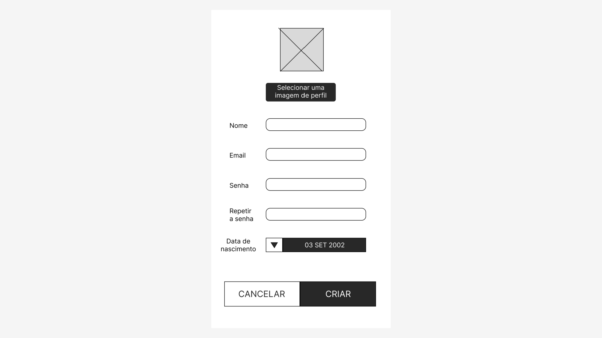

O fluxo de telas tem como objetivo realizar uma espécie de passo a passo de como se chega a uma determinada tela do sistema. Ela responde algumas perguntas como: a partid de quais telas posso acessar esta outra? Quais telas posso acessar através desta outra? É preciso passar por uma determinada tela para alcançar uma outra após N passos?
